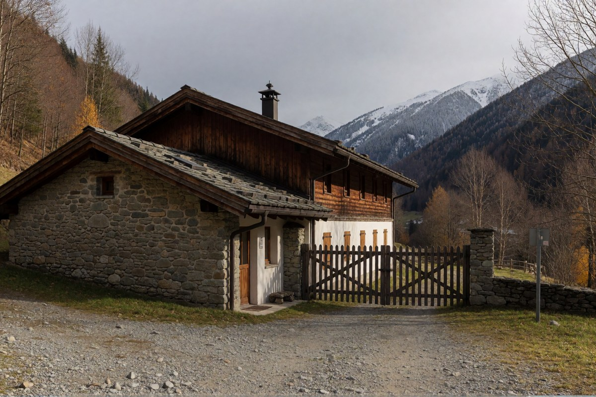

Sicilia · 17 novembre 2026
Niko Pandetta lascia il carcere: domiciliari in una comunità

Il giudice di Messina ha sostituito il carcere con gli arresti domiciliari in una comunità terapeutica, con il braccialetto elettronico. Ma non ha cancellato le accuse: per il gip i gravi indizi restano.
di Franco Zanghì
Niko Pandetta lascia il carcere. Il trapper catanese, arrestato il 12 novembre nell'inchiesta su droga e telefonini dentro il carcere di Gazzi, a Messina, è stato trasferito agli arresti domiciliari in una comunità. Lo ha deciso martedì 17 novembre il giudice per le indagini preliminari di Messina, dopo l'istanza del suo avvocato.
Pandetta ha lasciato il carcere di Voghera, in provincia di Pavia, dove era stato trasferito d'urgenza per motivi di sicurezza dopo un primo passaggio nel carcere di Sondrio.
Dove si trova e con quali condizioni
Secondo L'Unione Sarda, che ha letto l'ordinanza, la comunità è a Tirano, in provincia di Sondrio, ed è la stessa in cui Pandetta stava già seguendo un percorso di recupero. Le condizioni sono rigide: braccialetto elettronico, nessuna uscita senza autorizzazione, nessun contatto con chi non vive con lui o non lo assiste.
Le accuse restano
Il giudice non ha cancellato le contestazioni. Sempre secondo L'Unione Sarda, per il gip i gravi indizi restano, sostenuti dalle dichiarazioni di tre collaboratori di giustizia. La scelta dei domiciliari è motivata anche dal fatto che i fatti contestati risalgono all'autunno del 2023, quindi a prima del percorso in comunità. Secondo i magistrati Pandetta sarebbe stato al vertice di un gruppo di detenuti catanesi all'interno del carcere di Gazzi.
La difesa non ci sta. «Adesso attendiamo la fissazione dell'udienza davanti al Tribunale del Riesame, dove chiederemo l'annullamento integrale dell'ordinanza», ha detto il suo avvocato all'ANSA. E c'è un altro elemento: uno dei detenuti che hanno parlato con i magistrati, secondo quanto si apprende, avrebbe in parte ritrattato, sostenendo di aver reso quelle dichiarazioni mentre era in uno stato di alterazione psicofisica.
Il punto
Pandetta esce dal carcere ma non è libero: domiciliari in comunità, con il braccialetto e il divieto di uscire. Le accuse restano in piedi e per tutti vale la presunzione d'innocenza fino alla sentenza definitiva. La prossima tappa è il Riesame, e sarà quel collegio a dire se l'impianto dell'accusa regge. Nel frattempo vale la pena ricordare da dove nasce l'inchiesta: non da una piazza di spaccio, ma dall'interno di un carcere, cioè dal posto in cui lo Stato dovrebbe avere il controllo completo.
Fonti
- ANSA Sicilia, la decisione del giudice per le indagini preliminari di Messina e le parole del difensore, 17 novembre 2026
- L'Unione Sarda, il contenuto dell'ordinanza, la comunità di Tirano e le dichiarazioni dei collaboratori di giustizia, 17 novembre 2026
- La Sicilia, LiveSicilia e CataniaToday, il trasferimento dal carcere di Voghera, 17 novembre 2026
Indagini preliminari in corso alla data di pubblicazione: l'udienza davanti al Tribunale del Riesame non era ancora stata fissata.